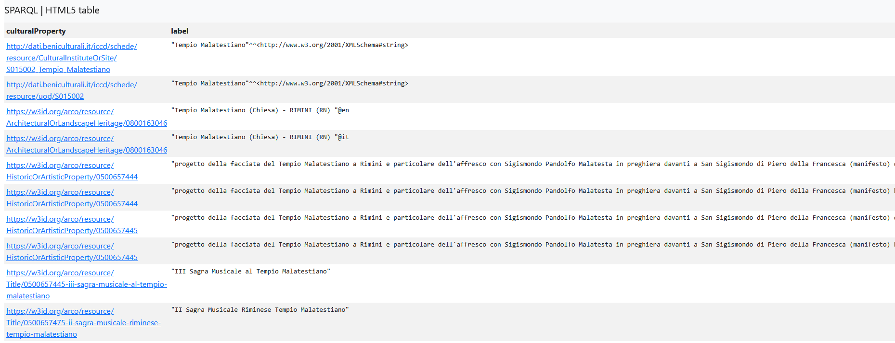
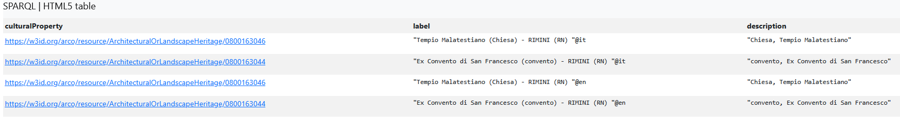
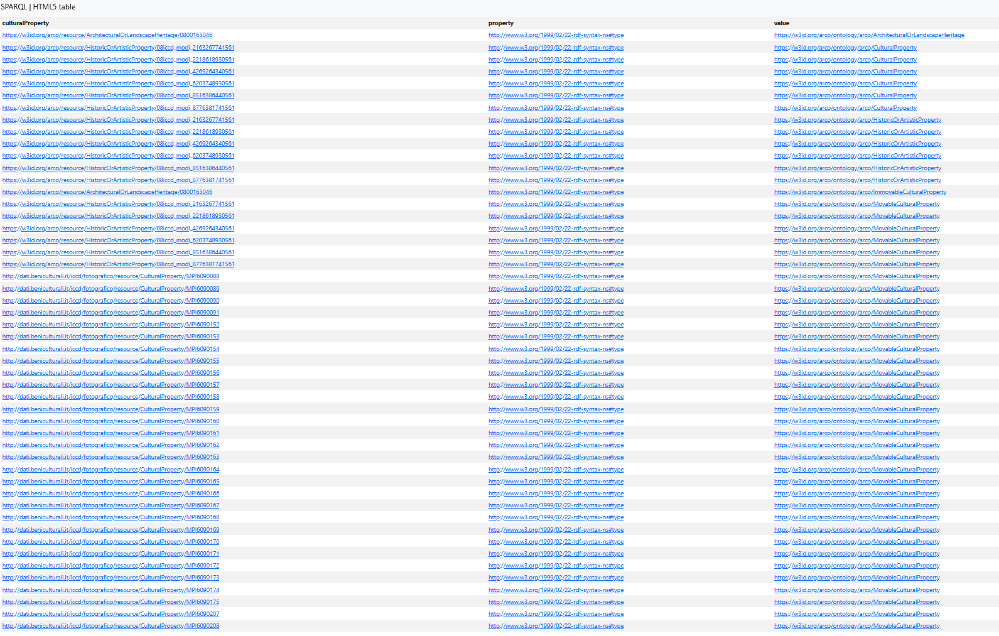
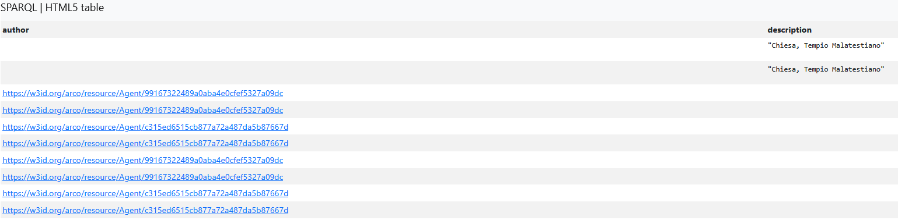
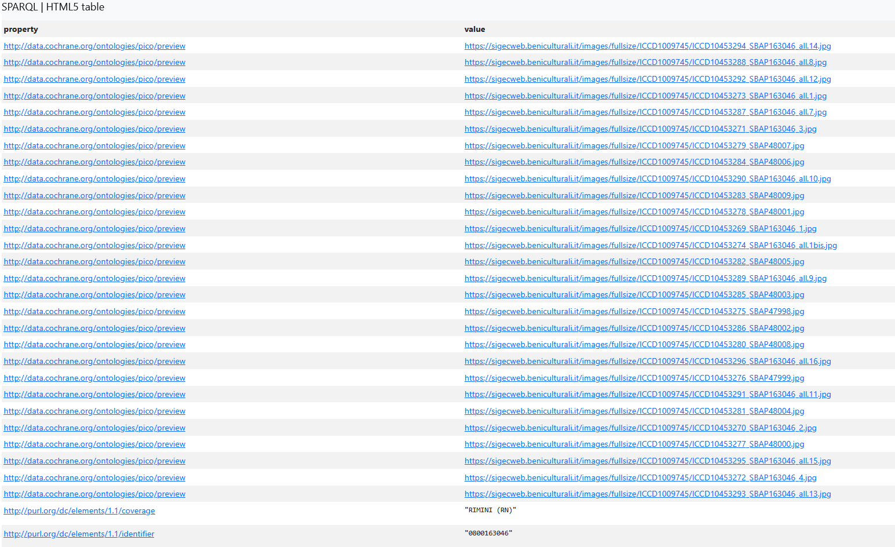
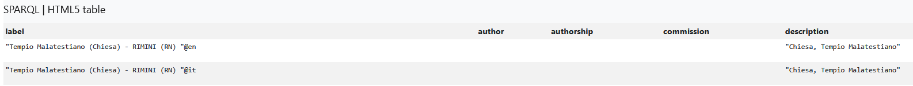

SPARQL Queries & Results
To find out how the Tempio Malatestiano is represented in ArCo, I queried the knowledge graph through the official ArCo SPARQL endpoint. The queries follow the logic of my research: first I located the monument and its related resources, then I looked at the information attached to it, and finally I verified which historical and artistic aspects are missing. Each query can be copied and run directly in the endpoint.
Together, the queries use all the SPARQL keywords required by the project: DISTINCT, FILTER and REGEX, LIMIT, UNION, OPTIONAL and ORDER BY.
Query 1 – Does ArCo contain the Tempio Malatestiano?
Before looking for gaps, I needed to know whether my monument was present in ArCo and which resources were associated with it. I therefore searched for every resource whose label contains the words "Tempio Malatestiano".
Explanation of keywords used:
- rdfs:label: retrieves the name associated with each resource.
- FILTER(REGEX(...)): keeps only the labels containing "Tempio Malatestiano"; the "i" flag makes the search case-insensitive.
- DISTINCT: removes duplicate results.
- LIMIT 10: returns at most 10 results.
SPARQL Query:
PREFIX rdfs: <http://www.w3.org/2000/01/rdf-schema#>
PREFIX arco: <https://w3id.org/arco/ontology/arco/>
SELECT DISTINCT ?culturalProperty ?label
WHERE {
?culturalProperty rdfs:label ?label .
FILTER(REGEX(?label, "Tempio Malatestiano", "i"))
}
LIMIT 10✅ Results
The query returned 10 rows, confirming that the Tempio Malatestiano is represented in ArCo. The rows did not refer to a single resource: besides the building itself, they included two catalogue records of the Tempio as a cultural site, two 20th-century posters showing the façade, and the titles of posters of the music festival held in the Tempio ("Sagra Musicale"). Some resources appear twice, because their label is recorded both in Italian (@it) and in English (@en): DISTINCT does not merge them, because the two labels have different language tags.
Main IRIs found:
- https://w3id.org/arco/resource/ArchitecturalOrLandscapeHeritage/0800163046 – "Tempio Malatestiano (Chiesa) - RIMINI (RN)": the architectural heritage record of the building, which became the main subject of my investigation and of my RDF triples.
- http://dati.beniculturali.it/iccd/schede/resource/CulturalInstituteOrSite/S015002_Tempio_Malatestiano – the Tempio as a cultural site.
- https://w3id.org/arco/resource/HistoricOrArtisticProperty/0500657444 – a 20th-century poster showing the façade of the Tempio and a detail of Piero della Francesca's fresco.

Query 2 – Alternative names of the monument
The Tempio Malatestiano is also known as the Church of San Francesco, its original Franciscan dedication. To check whether ArCo records the monument under both names, I combined them in a single query and also asked for a textual description, when available.
My first version searched both names among all the labels in ArCo, but the endpoint always stopped with the error "Transaction timed out": the query was too heavy (see Challenges & Solutions). I therefore made it lighter by searching only among architectural heritage records and, for the name "San Francesco", only among those located in Rimini.
Explanation of keywords used:
- a arco:ArchitecturalOrLandscapeHeritage: keeps only resources of type architectural heritage (buildings), which makes the search faster.
- UNION: combines two search patterns, so resources matching either name are returned.
- FILTER(REGEX(...) && REGEX(...)): the symbol && means "and": in the second pattern a label must contain both "San Francesco" and "Rimini".
- OPTIONAL: adds the description when it exists, without excluding resources that have none.
- rdfs:comment: retrieves a short textual description of the resource.
- DISTINCT: removes duplicate results.
- ORDER BY DESC(?label): sorts the results by label in reverse alphabetical order.
- LIMIT 30: returns at most 30 results.
SPARQL Query:
PREFIX rdfs: <http://www.w3.org/2000/01/rdf-schema#>
PREFIX arco: <https://w3id.org/arco/ontology/arco/>
SELECT DISTINCT ?culturalProperty ?label ?description
WHERE {
{
?culturalProperty a arco:ArchitecturalOrLandscapeHeritage ;
rdfs:label ?label .
FILTER(REGEX(?label, "Tempio Malatestiano", "i"))
}
UNION
{
?culturalProperty a arco:ArchitecturalOrLandscapeHeritage ;
rdfs:label ?label .
FILTER(REGEX(?label, "San Francesco", "i") && REGEX(?label, "Rimini", "i"))
}
OPTIONAL { ?culturalProperty rdfs:comment ?description }
}
ORDER BY DESC(?label)
LIMIT 30✅ Results
The query returned only two buildings, each listed twice because its label is recorded in Italian and in English:
- https://w3id.org/arco/resource/ArchitecturalOrLandscapeHeritage/0800163046 – "Tempio Malatestiano (Chiesa) - RIMINI (RN)", with the description "Chiesa, Tempio Malatestiano";
- https://w3id.org/arco/resource/ArchitecturalOrLandscapeHeritage/0800163044 – "Ex Convento di San Francesco (convento) - RIMINI (RN)", with the description "convento, Ex Convento di San Francesco".
This result was useful in two ways. First, it showed that in ArCo the church is catalogued only under the name "Tempio Malatestiano": the name "San Francesco" refers to a different building, the former Franciscan convent, which has its own record. This confirmed that the IRI found in Query 1 is the right one for my project. Second, it showed that both records have only a very short description, which states the type of building and its name.

Query 3 – A first look at the existing data
After locating the monument, I tried to "open" its record and see which properties and values ArCo stores about it. To isolate the building from photographs and documents, the query keeps only the labels that contain both "Tempio Malatestiano" and "chiesa".
Explanation of keywords used:
- ?property ?value: retrieves every property linked to the resource and its value.
- FILTER(REGEX(...)): two filters are combined, so a label must contain both expressions.
- DISTINCT: avoids duplicate property–value pairs.
- LIMIT 50: returns at most 50 rows.
SPARQL Query:
PREFIX rdfs: <http://www.w3.org/2000/01/rdf-schema#>
PREFIX arco: <https://w3id.org/arco/ontology/arco/>
SELECT DISTINCT ?culturalProperty ?property ?value
WHERE {
?culturalProperty rdfs:label ?label ;
?property ?value .
FILTER(REGEX(?label, "Tempio Malatestiano", "i"))
FILTER(REGEX(?label, "chiesa", "i"))
}
LIMIT 50❌ Results
In the 50 rows returned, the only property was rdf:type, which states what kind of resource it is but says nothing about its history or artistic features. Looking at the first column, I also noticed that the rows did not concern only the building: many of them referred to drawings and photographs whose labels also contain the words "Tempio Malatestiano" and "chiesa".
This result raised a first suspicion that the record was incomplete, but it was not conclusive: a query based on text filters depends on how labels are written, and its first 50 rows do not necessarily show the whole record.

Query 4 – Checking authorship and description
To test the suspicion, I asked ArCo directly for the author and the description of the resources found with the same filters. Using OPTIONAL, the query does not fail if the information is missing: it returns empty cells.
Explanation of keywords used:
- OPTIONAL: retrieves the author and the description only if they exist; empty cells mean the information is absent.
- a-cd:hasAuthor: links a cultural property to its author (ArCo Context Description module).
- rdfs:comment: retrieves the textual description.
SPARQL Query:
PREFIX rdfs: <http://www.w3.org/2000/01/rdf-schema#>
PREFIX arco: <https://w3id.org/arco/ontology/arco/>
PREFIX a-cd: <https://w3id.org/arco/ontology/context-description/>
SELECT ?author ?description
WHERE {
?culturalProperty rdfs:label ?label .
FILTER(REGEX(?label, "Tempio Malatestiano", "i"))
FILTER(REGEX(?label, "chiesa", "i"))
OPTIONAL { ?culturalProperty a-cd:hasAuthor ?author }
OPTIONAL { ?culturalProperty rdfs:comment ?description }
}
LIMIT 10⚠️ Results
The rows containing the description of the building ("Chiesa, Tempio Malatestiano") had no author. However, other rows returned two author IRIs. Opening them in the browser, I found that they do not refer to the architect of the Tempio:
- Agent/99167322489a0aba4e0cfef5327a09dc – "Anonimo italiano (XX)", an anonymous 20th-century author;
- Agent/c315ed6515cb877a72a487da5b87667d – "Pavan, Luigi", active in the second half of the 20th century.
These are the authors of 20th-century drawings and documents about the Tempio, not of the building itself. Because the query selects resources through their labels, it also captured other records whose labels contain the same words. This showed me that, to verify what ArCo says about the monument, I had to query its record directly through its IRI.

Query 5 – Inspecting the full record through its IRI
I queried the monument directly through the IRI found in Query 1. This way the result no longer depends on text filters and shows every property ArCo stores about the building.
Explanation of keywords used:
- VALUES ?tempio: fixes the variable ?tempio to the monument's IRI, so the query retrieves all the properties and values of that resource only.
- DISTINCT: avoids duplicate rows.
- ORDER BY ?property: groups the rows by property, which makes the record easier to read.
SPARQL Query:
SELECT DISTINCT ?property ?value
WHERE {
VALUES ?tempio {
<https://w3id.org/arco/resource/ArchitecturalOrLandscapeHeritage/0800163046>
}
?tempio ?property ?value .
}
ORDER BY ?property✅ Results
The record turned out to be richer than Query 3 suggested. ArCo stores, among other things:
- the title, the catalogue identifiers and the type of building (Chiesa);
- the dating (a-cd:hasDating) and the façade as a construction element (a-cs:hasConstructionElement);
- the location, the address and the legal situation of the property;
- the historical designation "Tempio Malatestiano" (a-dd:hasDesignationInTime);
- a large photographic documentation and links to the official catalogue record.
However, the record contains no property describing who designed the building or who commissioned it.

The record contains too many rows to fit in a single screenshot: the complete list of results is available here.
Query 6 – Confirming the gap
Finally, I wrote a targeted query asking ArCo, for the monument's IRI only, for its author, its authorship attribution, its commission and its description, using the properties of the Context Description module.
Explanation of keywords used:
- VALUES ?tempio: assigns the monument's IRI to the variable ?tempio, so it does not have to be repeated in every line.
- ?tempio rdfs:label ?label: a required pattern that retrieves the name of the monument, so that the query always returns at least one row.
- OPTIONAL: each property is requested in its own optional block; empty cells mean the information is absent.
- a-cd:hasAuthor / a-cd:hasAuthorshipAttribution: link a cultural property to its author or to an authorship attribution.
- a-cd:hasCommission: links a cultural property to its commission.
SPARQL Query:
PREFIX rdfs: <http://www.w3.org/2000/01/rdf-schema#>
PREFIX a-cd: <https://w3id.org/arco/ontology/context-description/>
SELECT ?label ?author ?authorship ?commission ?description
WHERE {
VALUES ?tempio {
<https://w3id.org/arco/resource/ArchitecturalOrLandscapeHeritage/0800163046>
}
?tempio rdfs:label ?label .
OPTIONAL { ?tempio a-cd:hasAuthor ?author }
OPTIONAL { ?tempio a-cd:hasAuthorshipAttribution ?authorship }
OPTIONAL { ?tempio a-cd:hasCommission ?commission }
OPTIONAL { ?tempio rdfs:comment ?description }
}❌ Results
The query returns the label of the monument (in Italian and in English) and its description, "Chiesa, Tempio Malatestiano". The columns for author, authorship attribution and commission are empty: ArCo records neither Leon Battista Alberti as the architect of the Tempio Malatestiano nor Sigismondo Pandolfo Malatesta as the patron who commissioned its transformation.

Identifying the Information Gap
Comparing the query results with historical and art-historical sources, I identified the following missing information:
| Gap | Evidence from the queries | What is missing |
|---|---|---|
| Authorship | No a-cd:hasAuthor or authorship attribution on the monument's record (Queries 5–6) | Leon Battista Alberti, who designed the Renaissance exterior from around 1450 |
| Commission | No a-cd:hasCommission on the record (Queries 5–6) | Sigismondo Pandolfo Malatesta, Lord of Rimini, who transformed the church into a dynastic monument |
| Description | The only rdfs:comment is "Chiesa, Tempio Malatestiano" (Queries 2 and 6) | The historical and artistic context: humanist programme, reliefs by Agostino di Duccio, works by Piero della Francesca and Giotto |
I chose to focus on authorship and commission, because they are central to the identity of the monument and can be modelled with existing ArCo properties, and on a short description of its context. These became the starting point for the LLM-assisted research described in the next section, LLM Prompts.